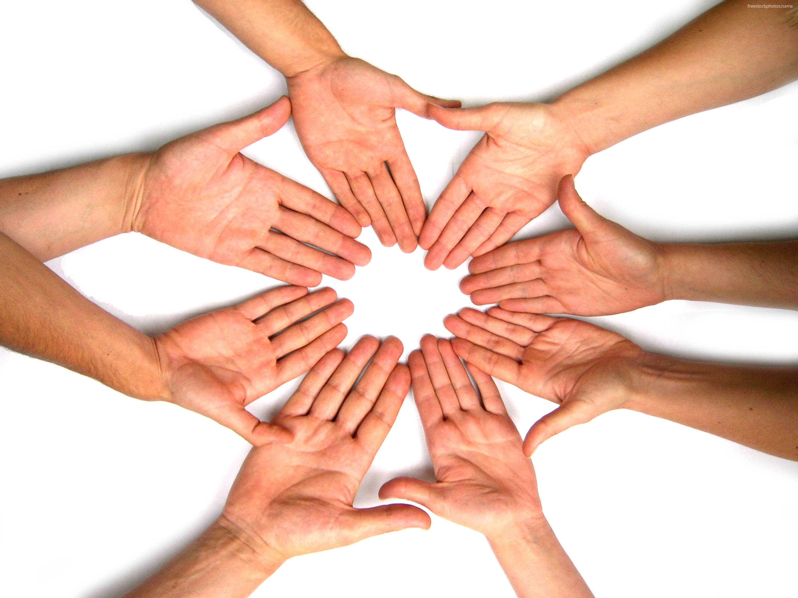

<ion-header>
  <ion-navbar color="primary">
    <ion-title>Yed Wahda</ion-title>
  </ion-navbar>
</ion-header>

<!-- <ion-content  padding>
  <h1 style="font-family:Verdana;">Bienvenue à Yed Wahda</h1>
  

</ion-content>
 -->

<ion-content>
  <ion-slides pager>


    <ion-slide>
      <ion-toolbar>Plus qu'un don, un mouvement...
      </ion-toolbar>
      
      <h2 class="slide-title">Bienvenue à Yed Wahda !</h2>
      <button ion-button large clear icon-right color="primary" (click)="inscriptionRoute()">
        Continue
        <ion-icon name="arrow-forward"></ion-icon>
        </button>
    </ion-slide>

    <ion-slide *ngFor="let slide of slides">

      
      <h2 class="slide-title" [innerHTML]="slide.title"></h2>
      <p [innerHTML]="slide.description"></p>
      <button ion-button large clear icon-right color="primary" (click)="inscriptionRoute()">
        Continue
        <ion-icon name="arrow-forward"></ion-icon>
      </button>
    </ion-slide>
  </ion-slides>
</ion-content>
